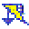
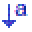
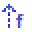

Causal Factors
Direct link toward element page
Titles referencing the Element
Lists referencing the Element
-  UnsafeControlAction - (UCA-09) IMU fails to send motion/acceleration data to the Autopilot.
-  ControlAction - (CA-04) Motor Velocity [Voltage]
- UnsafeControlAction - (UCA-04) Commands are sent despite no operator input (e.g., noise interpreted as signal).
- UnsafeControlAction - (UCA-15) GPS module misinterprets or misuses otherwise correct satellite data.
- UnsafeControlAction - (UCA-18) The geolocation system provides wrong or inconsistent coordinates.
-  FeedbackElement - (FB-02) Drone Status [Radio]
- UnsafeControlAction - (UCA-06) The data sent is outdated, corrupted, or contains invalid sensor readings.
- UnsafeControlAction - (UCA-01) The RC fails to send commands when user input is given (e.g., stick movement not transmitted).
- UnsafeControlAction - (UCA-03) RC commands are sent during autonomous mode, causing interference.
- UnsafeControlAction - (UCA-16) GNSS signal is significantly delayed, affecting real-time position estimation.
- ControlAction - (CA-03) Drone Position [BUS]
- UnsafeControlAction - (UCA-17) The geolocation system fails to send any position data to the autopilot.
- UnsafeControlAction - (UCA-13) GNSS source fails to send coordinates to the GPS module (signal loss or transmission error).
- UnsafeControlAction - (UCA-14) GNSS provides incorrect satellite data (e.g., due to spoofing, drift, or error in ephemeris data).
- UnsafeControlAction - (UCA-20) Position is calculated using a degraded or unverified GNSS signal, leading to a faulty position fix.
- UnsafeControlAction - (UCA-12) IMU data is received too late to ensure timely correction of flight dynamics.
- UnsafeControlAction - (UCA-07) Telemetry data is delayed, leading to outdated operator decisions.
- UnsafeControlAction - (UCA-11) Autopilot misinterprets valid IMU data, applying wrong compensation or control decisions.
- UnsafeControlAction - (UCA-08) Incoherent sensor status is reported (e.g., IMU and GPS data mismatch).
- UnsafeControlAction - (UCA-05) The autopilot does not send telemetry (e.g., battery status, position, sensor data).
- UnsafeControlAction - (UCA-19) The position is sent with excessive latency, affecting flight path corrections.
- UnsafeControlAction - (UCA-02) The RC transmits corrupted or inaccurate commands due to signal degradation or interface error.
- FeedbackElement - (FB-03) GPS Position [GNSS]
- UnsafeControlAction - (UCA-10) IMU sends corrupted, biased, or uncalibrated data (e.g., due to sensor drift or malfunction).